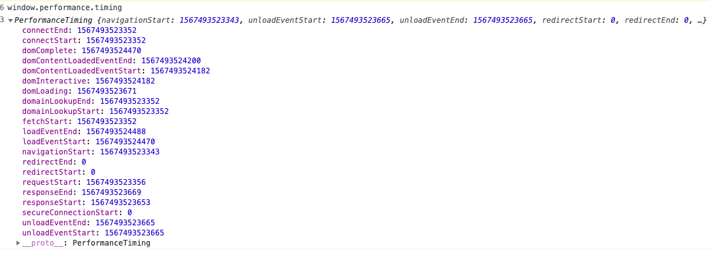
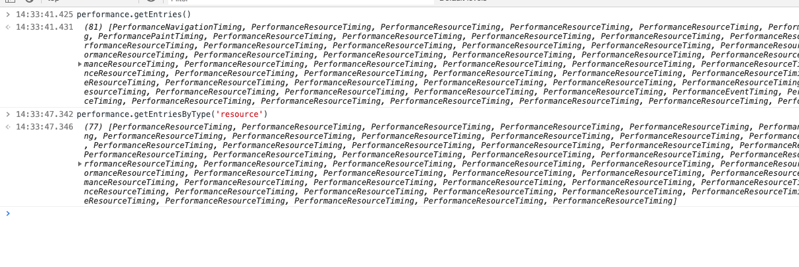
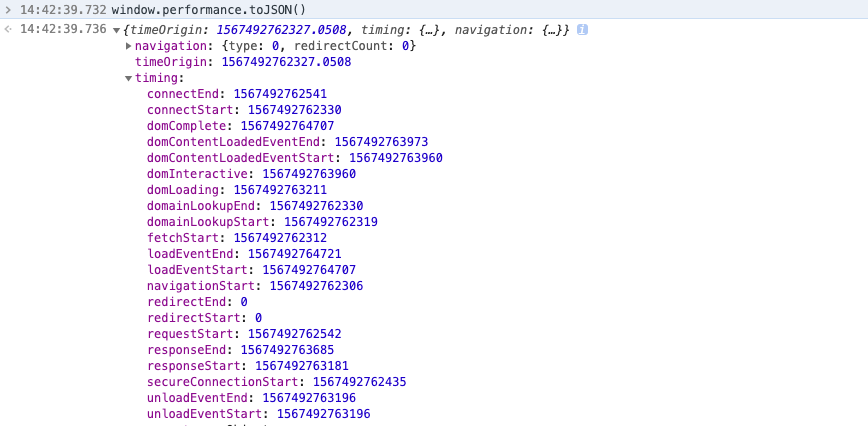
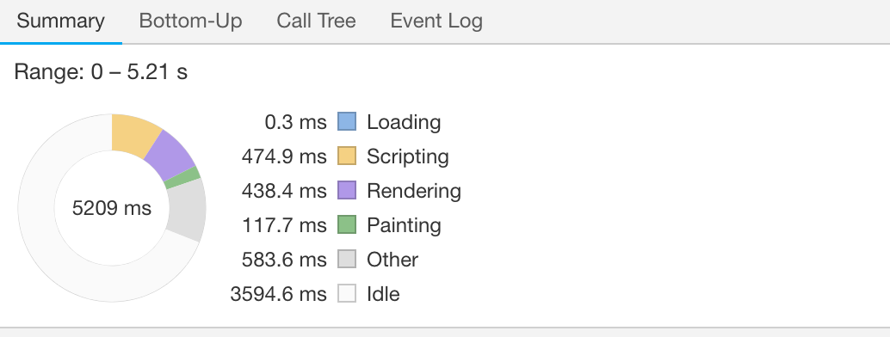
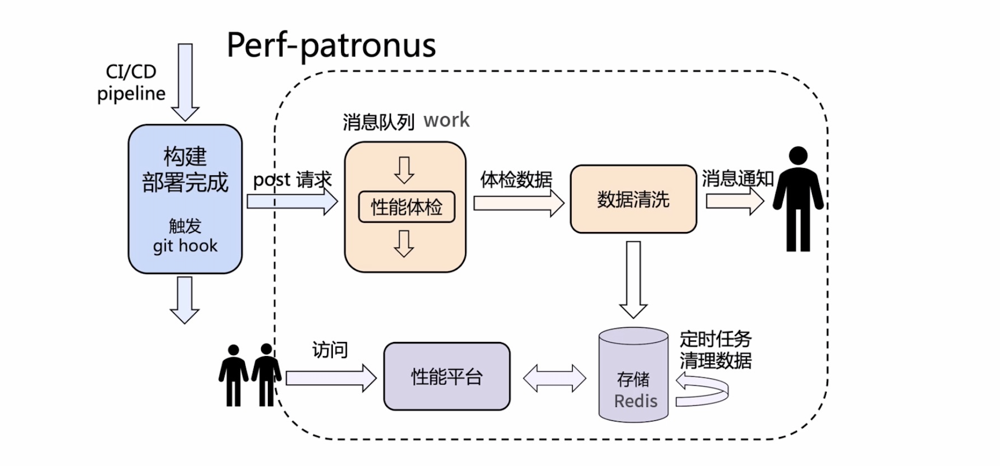

PerformanceTiming
PerformanceTiming 接口包含了当前页面中与时间相关的信息
初始化页面->重定向时间, 清除前一个页面 -> 缓存->DNS 解析->TCP 三次握手 四次挥手->向服务器发送请求->服务器响应返回请求->处理文件->加载 的整个流程图

- navigationStart：当前浏览器窗口的前一个网页关闭，发生 unload 事件时的 Unix 毫秒时间戳。如果没有前一个网页，则等于 fetchStart 属性。
- unloadEventStart：如果前一个网页与当前网页属于同一个域名，则返回前一个网页的 unload 事件发生时的 Unix 毫秒时间戳。如果没有前一个网页，或者之前的网页跳转不是在同一个域名内，则返回值为 0。
- unloadEventEnd：如果前一个网页与当前网页属于同一个域名，则返回前一个网页 unload 事件的回调函数结束时的 Unix 毫秒时间戳。如果没有前一个网页，或者之前的网页跳转不是在同一个域名内，则返回值为 0。
- redirectStart：返回第一个 HTTP 跳转开始时的 Unix 毫秒时间戳。如果没有跳转，或者不是同一个域名内部的跳转，则返回值为 0。
- redirectEnd：返回最后一个 HTTP 跳转结束时（即跳转回应的最后一个字节接受完成时）的 Unix 毫秒时间戳。如果没有跳转，或者不是同一个域名内部的跳转，则返回值为 0。
- fetchStart：返回浏览器准备使用 HTTP 请求读取文档时的 Unix 毫秒时间戳。该事件在网页查询本地缓存之前发生。
- domainLookupStart：返回域名查询开始时的 Unix 毫秒时间戳。如果使用持久连接，或者信息是从本地缓存获取的，则返回值等同于 fetchStart 属性的值。
- domainLookupEnd：返回域名查询结束时的 Unix 毫秒时间戳。如果使用持久连接，或者信息是从本地缓存获取的，则返回值等同于 fetchStart 属性的值。
- connectStart：返回 HTTP 请求开始向服务器发送时的 Unix 毫秒时间戳。如果使用持久连接（persistent connection），则返回值等同于 fetchStart 属性的值。
- connectEnd：返回浏览器与服务器之间的连接建立时的 Unix 毫秒时间戳。如果建立的是持久连接，则返回值等同于 fetchStart 属性的值。连接建立指的是所有握手和认证过程全部结束。
- secureConnectionStart：返回浏览器与服务器开始安全链接的握手时的 Unix 毫秒时间戳。如果当前网页不要求安全连接，则返回 0。
- requestStart：返回浏览器向服务器发出 HTTP 请求时（或开始读取本地缓存时）的 Unix 毫秒时间戳。
- responseStart：返回浏览器从服务器收到（或从本地缓存读取）第一个字节时的 Unix 毫秒时间戳。
- responseEnd：返回浏览器从服务器收到（或从本地缓存读取）最后一个字节时（如果在此之前 HTTP 连接已经关闭，则返回关闭时）的 Unix 毫秒时间戳。
- domLoading：返回当前网页 DOM 结构开始解析时（即 Document.readyState 属性变为“loading”、相应的 readystatechange 事件触发时）的 Unix 毫秒时间戳。
- domInteractive：返回当前网页 DOM 结构结束解析、开始加载内嵌资源时（即 Document.readyState 属性变为“interactive”、相应的 readystatechange 事件触发时）的 Unix 毫秒时间戳。
- domContentLoadedEventStart：返回当前网页 DOMContentLoaded 事件发生时（即 DOM 结构解析完毕、所有脚本开始运行时）的 Unix 毫秒时间戳。
- domContentLoadedEventEnd：返回当前网页所有需要执行的脚本执行完成时的 Unix 毫秒时间戳。
- domComplete：返回当前网页 DOM 结构生成时（即 Document.readyState 属性变为“complete”，以及相应的 readystatechange 事件发生时）的 Unix 毫秒时间戳。
- loadEventStart：返回当前网页 load 事件的回调函数开始时的 Unix 毫秒时间戳。如果该事件还没有发生，返回 0。
- loadEventEnd：返回当前网页 load 事件的回调函数运行结束时的 Unix 毫秒时间戳。如果该事件还没有发生，返回 0。
常用的计算

- 上个页面的到这个页面的时长 fetchStartfet-navigationStart
- 重定向时常 ： redirectEnd-redirectStart
- DNS 查询耗时 ：domainLookupEnd - domainLookupStart
- TCP 链接耗时 ：connectEnd - connectStart
- request 请求耗时 ：responseEnd - responseStart
- 解析 dom 树耗时 ： domComplete - domInteractive
- 白屏时间 ：responseStart - navigationStart
- domready 时间(用户可操作时间节点) ：domContentLoadedEventEnd - navigationStart
- onload 时间(总下载时间) ：loadEventEnd - navigationStart
preformance.navigation
window.performance.navigation： 旨在告诉开发者当前页面是通过什么方式导航过来的，只有两个属性：type，redirectCount
redirectCount:表示到达最终页面前，重定向的次数，但是这个接口有同源策略限制，即仅能检测同源的重定向。
type:标志页面导航类型,值如下表
| type 常数 | 枚举值 | 描述 |
|---|---|---|
| TYPE_NAVIGATE | 0 | 普通进入，包括：点击链接、在地址栏中输入 URL、表单提交、或者通过除下表中 TYPE_RELOAD 和 TYPE_BACK_FORWARD 的方式初始化脚本。 |
| TYPE_RELOAD | 1 | 通过刷新进入，包括：浏览器的刷新按钮、快捷键刷新、location.reload()等方法。 |
| TYPE_BACK_FORWARD | 2 | 通过操作历史记录进入，包括：浏览器的前进后退按钮、快捷键操作、history.forward()、history.back()、history.go(num)。 |
| TYPE_UNDEFINED | 255 | 其他非以上类型的方式进入。 |
preformance.memory
window.preformance.memory 描述内存多少，是在 Chrome 中添加的一个非标准属性。
- jsHeapSizeLimit: 内存大小限制
- totalJSHeapSize: 可使用的内存
- usedJSHeapSize: JS 对象(包括 V8 引擎内部对象)占用的内存，不能大于 totalJSHeapSize，如果大于，有可能出现了内存泄漏
其他的 APi

- performance.getEntries() 会获取页面加载资源和网络请求信息
- performance.getEntriesByType('resource')// 获取资源加载列表
- performance.now()是当前时间与 performance.timing.navigationStart 的时间差，以微秒（百万分之一秒）为单位的时间，与 Date.now()-performance.timing.navigationStart 的区别是不受系统程序执行阻塞的影响，因此更加精准。
- performance.toJSON() ：它返回一个由 performance 对象各个属性组成的 JSON
- PerformanceObserver ： 构造函数使用给定的观察者 callback 生成一个新的 PerformanceObserver 对象.当通过 observe() 方法注册的 条目类型 的 性能条目事件 被记录下来时,调用该观察者回调
const observer = new PerformanceObserver(list => {
for (const entry of list.getEntries()) {
console.log(entry);
}
});
// Start observing the entry types you care about.
observer.observe({entryTypes: ['paint', 'longtask']});

注意
目前主流浏览器虽然都已支持 Performance 对象，但是并不能支持它上面的全部属性和方法，本文主要依据 chrome 编写，因此提到的 chrome 浏览器都是兼容的，其他具体使用时兼容性请自行测试，目前已测如下：
- safari 浏览器(包括 mac 和 ios)只支持 navigation,timing,now 其余均不支持
- 微信浏览器支持 timing,navigation 属性，不支持 performance.getEntries 方法
Sumary chrome 浏览器
总览堆栈的统计信息。可以清楚的看出堆快照的分布情况。

- 蓝色:网络通信
- 黄色:javascript 执行
- 紫色:样式计算 重排
- 绿色:重绘
浏览器性能优化工具
- pagespeed （chrome 插件）
- performance-bookmarklet （chrome 插件）
- Make the web faster （chrome 插件）
- preformance(profiles 旧版)
- 性能魔方(第三方网站)
关键指标
ttfp:返回的第一个字节 fp:页面的反应，第一个像素点落地 background:#ddd;看的见 fcp: 第一个有意义的内容 0-2s 之内 fmp：有意义的绘制 （自定义的） DCL： lcp:0——2.5s。第一个绘制的最大内容 longTask: 长任务时间 tti:--3.8s. 可交互
性能优化
- 前端性能优化:小字为先， 埋点测速，
- 雅虎军规
- 简化页面标签, 减少重排 重绘
- 精简 css uncss( 去除无用的 css)
- 精简 js 代码 巧用数据结构与算法
- 打包压缩合并 tree-shaking
- 开启 cnd 预解析 prefetch
- 开启 cnd 加速(并行最多 5 个)。节约 cookie 带宽 节约主域名的连接数，优化页面响应速度
- 开启页面懒加载
- 缓存静态资源文件 localstrage
性能优化调试指标
webPageTest 本地服务
本地部署 webPageTest 测试
docker
docker pull webpagetest/server
docker pull webpagetest/agent
lighthourse
npm install lighthourse -g
性能守卫平台
通过收集 FP、FCP、TTi、LCP、FMP 等参数，监控线上项目运行状态

影响不确定性因素
- 页面不确定性
- 用户侧网络情况
- 终端设备
- 页面服务